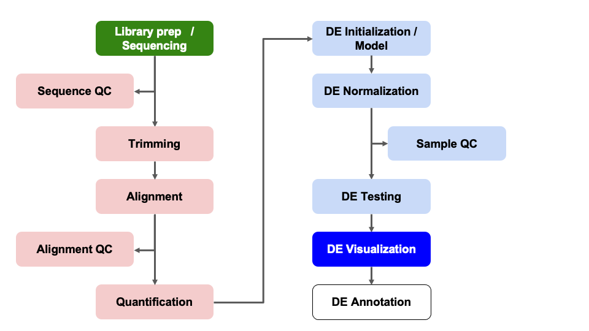
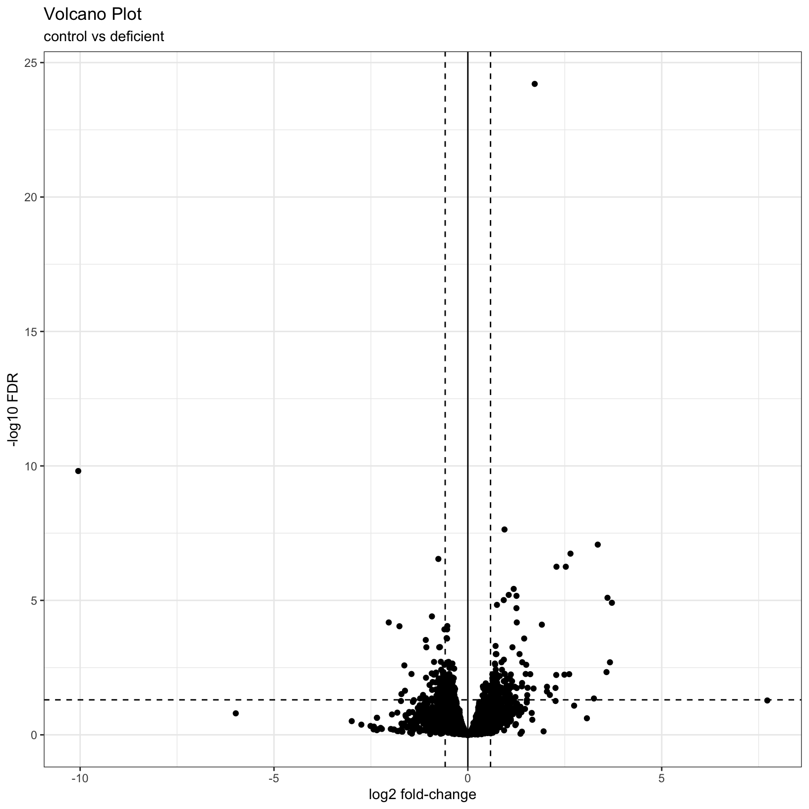
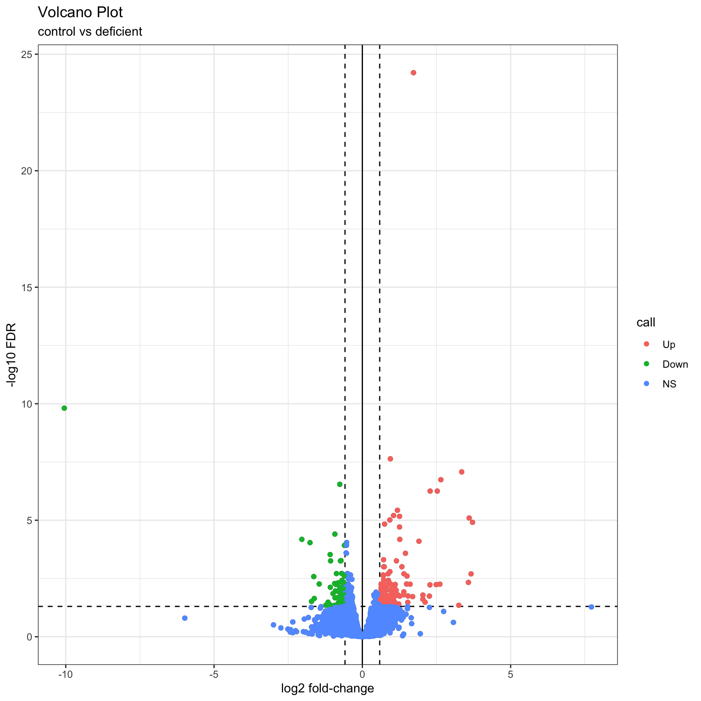
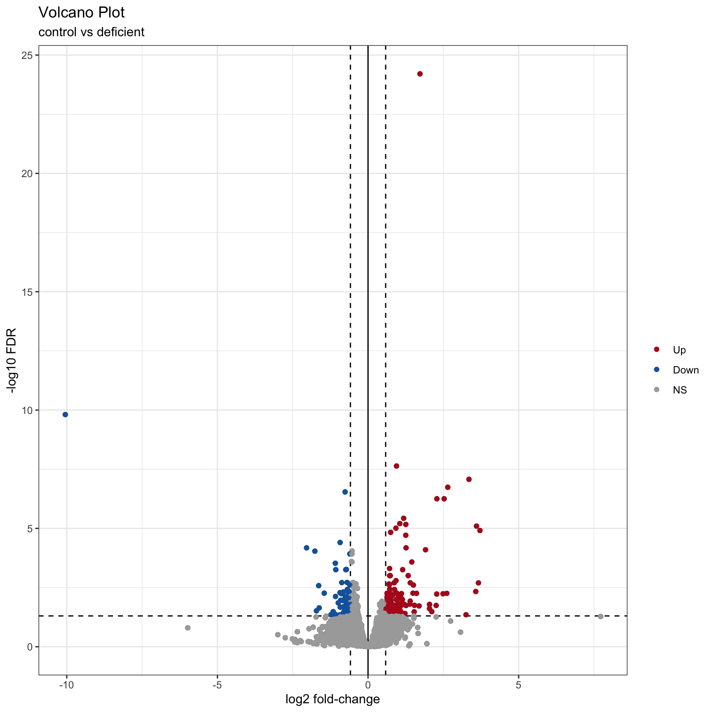

In this module, we will learn:
Here we will generate summary figures for our results and annotate our DE tables.

Part of differential expression analysis is generating visualizations and summary tables to share our results. While the DESeq2 vignette provides examples of other visualizations, a common visualization to summarize DE comparisons are volcano plots.
To create our own summary, we first need to choose thresholds. A standard threshold for the adjusted p-value is less than 0.05. A reasonable threshold for linear fold-change is less than -1.5 or greater than 1.5 (which corresponds to log2 fold-change -0.585 and 0.585, respectively). Including a fold-change threshold ensures that the DE genes have a reasonable effect size as well as statistical significance.
Let’s set these thresholds as variables to reuse. This is generally good practice because if you want to change those thresholds later then you only have to change them in one location of your script, which is faster and can reduce the risk of errors from missing some instances in your code.
fc = 1.5
fdr = 0.05Note: Choosing thresholds
Thresholding on adjusted p-values < 0.05 is a standard threshold, but depending on the research question and/or how the results will be used, other thresholds might be reasonable.
There is a nice Biostar post that discusses choosing adjusted p-value thresholds, including cases where a more relaxed threshold might be appropriate and (some heated) discussion of the dangers of adjusting the choosen threshold after running an analysis. Additionally, there is a Dalmon et al 2012 paper about p-value and fold-change thresholds for microarray data that may help provide some context.
If we think back to Computational Foundations, conditional statements could allow us to determine the number of genes that pass our thresholds, which would be useful for annotating our results tables and plots.
Exercise
How would we identify the number of genes with adjusted p-values < 0.05 and a fold-change above 1.5 (or below -1.5) in our comparison?
Here is one possible answer:
sum(results_deficient_vs_control$padj < fdr & abs(results_deficient_vs_control$log2FoldChange) >= log2(fc), na.rm = TRUE)[1] 189Checkpoint: If you see the same number of DE genes with our choosen thresholds, please indicate with a green check. Otherwise use a red x.
Let’s now create a new column in
results_deficient_vs_control to record the significance
“call” based on these thresholds. And let’s separate the call by “Up” or
“Down”, noting that these are relative to our “Case” condition. There
are many ways to accomplish this, but the following will work:
# create new column called "call"
results_deficient_vs_control$call = 'NS'
head(results_deficient_vs_control)log2 fold change (MLE): condition deficient vs control
Wald test p-value: condition deficient vs control
DataFrame with 6 rows and 7 columns
baseMean log2FoldChange lfcSE stat pvalue
<numeric> <numeric> <numeric> <numeric> <numeric>
ENSMUSG00000000001 1489.83039 0.278343 0.148278 1.877165 0.0604955
ENSMUSG00000000028 1748.93544 0.221671 0.128835 1.720588 0.0853256
ENSMUSG00000000031 2151.87715 0.135823 0.284313 0.477724 0.6328467
ENSMUSG00000000037 24.91672 0.599542 0.562067 1.066673 0.2861195
ENSMUSG00000000049 7.78377 -1.227258 1.148327 -1.068735 0.2851890
ENSMUSG00000000056 19653.54030 -0.201183 0.167344 -1.202215 0.2292803
padj call
<numeric> <character>
ENSMUSG00000000001 0.324515 NS
ENSMUSG00000000028 0.385578 NS
ENSMUSG00000000031 0.866812 NS
ENSMUSG00000000037 NA NS
ENSMUSG00000000049 NA NS
ENSMUSG00000000056 0.596345 NS# determine the "Up" and "Down" indices:
up_idx = results_deficient_vs_control$padj < fdr & results_deficient_vs_control$log2FoldChange > log2(fc)
down_idx = results_deficient_vs_control$padj < fdr & results_deficient_vs_control$log2FoldChange < -log2(fc)
# use indices to assign the correct "Up" or "Down" values to the correct indices, and look at the head of the result:
results_deficient_vs_control$call[up_idx] = 'Up'
results_deficient_vs_control$call[down_idx] = 'Down'
head(results_deficient_vs_control)log2 fold change (MLE): condition deficient vs control
Wald test p-value: condition deficient vs control
DataFrame with 6 rows and 7 columns
baseMean log2FoldChange lfcSE stat pvalue
<numeric> <numeric> <numeric> <numeric> <numeric>
ENSMUSG00000000001 1489.83039 0.278343 0.148278 1.877165 0.0604955
ENSMUSG00000000028 1748.93544 0.221671 0.128835 1.720588 0.0853256
ENSMUSG00000000031 2151.87715 0.135823 0.284313 0.477724 0.6328467
ENSMUSG00000000037 24.91672 0.599542 0.562067 1.066673 0.2861195
ENSMUSG00000000049 7.78377 -1.227258 1.148327 -1.068735 0.2851890
ENSMUSG00000000056 19653.54030 -0.201183 0.167344 -1.202215 0.2292803
padj call
<numeric> <character>
ENSMUSG00000000001 0.324515 NS
ENSMUSG00000000028 0.385578 NS
ENSMUSG00000000031 0.866812 NS
ENSMUSG00000000037 NA NS
ENSMUSG00000000049 NA NS
ENSMUSG00000000056 0.596345 NS# modify column to be factor to make for easier plotting
results_deficient_vs_control$call = factor(results_deficient_vs_control$call, levels = c('Up', 'Down', 'NS'))
head(results_deficient_vs_control)log2 fold change (MLE): condition deficient vs control
Wald test p-value: condition deficient vs control
DataFrame with 6 rows and 7 columns
baseMean log2FoldChange lfcSE stat pvalue
<numeric> <numeric> <numeric> <numeric> <numeric>
ENSMUSG00000000001 1489.83039 0.278343 0.148278 1.877165 0.0604955
ENSMUSG00000000028 1748.93544 0.221671 0.128835 1.720588 0.0853256
ENSMUSG00000000031 2151.87715 0.135823 0.284313 0.477724 0.6328467
ENSMUSG00000000037 24.91672 0.599542 0.562067 1.066673 0.2861195
ENSMUSG00000000049 7.78377 -1.227258 1.148327 -1.068735 0.2851890
ENSMUSG00000000056 19653.54030 -0.201183 0.167344 -1.202215 0.2292803
padj call
<numeric> <factor>
ENSMUSG00000000001 0.324515 NS
ENSMUSG00000000028 0.385578 NS
ENSMUSG00000000031 0.866812 NS
ENSMUSG00000000037 NA NS
ENSMUSG00000000049 NA NS
ENSMUSG00000000056 0.596345 NSTip
It is often helpful to include code like this in differential expression analyses so there is a clearly labelled column that makes subsetting and summarizing the results easier.
Now we are in a position to quickly summarize our differential expression results:
# check summary of results
table(results_deficient_vs_control$call)
Up Down NS
120 69 16060 We see quickly how many genes were “Up” in iron replete, how many were “Down” in iron replete, and how many were not significant.
Checkpoint: If you successfully added the
call column and got the same table result as above, please
indicate with a green check. Otherwise use a red x.
As described by the Galaxy project, a volcano plot is a type of scatterplot that shows statistical significance (adjusted p-value) versus effect size (fold change). In a volcano plot, the most upregulated genes are towards the right, the most downregulated genes are towards the left, and the most statistically significant genes are towards the top.
Let’s coerce the DataFrame which was returned by
DESeq2::results() into a tibble in
anticipation of using the ggplot2 library to plot. We’re
also going to modify our results table so that the row names become a
separate column, and so that it’s ordered by adjusted p-value.
# Use the rownames argument to create a new column of gene IDs
# Also arrange by adjusted p-value
results_forPlot = as_tibble(results_deficient_vs_control, rownames = 'id') %>% arrange(padj)Let’s start with a simple volcano plot that plots the
log2FoldChange on the x-axis, and -log10(padj)
on the y-axis, adding custom labels to the plot with the
labs() function:
# Add plot labels and change the theme - save the plot as object `p`
p = ggplot(results_forPlot, aes(x = log2FoldChange, y = -log10(padj))) +
geom_point() +
theme_bw() +
labs(
title = 'Volcano Plot',
subtitle = 'control vs deficient',
x = 'log2 fold-change',
y = '-log10 FDR'
)
pWarning: Removed 7246 rows containing missing values or values outside the scale range
(`geom_point()`).What if we now added some visual guides to indicate where the
significant genes are? We can use the geom_vline() and
geom_hline() functions to accomplish this:
# Add threshold lines
p1 = p +
geom_vline(
xintercept = c(0, -log2(fc), log2(fc)),
linetype = c(1, 2, 2)) +
geom_hline(
yintercept = -log10(fdr),
linetype = 2)
p1Warning: Removed 7246 rows containing missing values or values outside the scale range
(`geom_point()`).
Finally, why not color the points by their significance status? We
already created the call column that has the correct
values. In this case we can get away with adding
geom_point() to our existing plot and specifying the
correct aesthetic, before customizing to have a nicer color scheme:
# map color to the `call` column from our input data
p2 = p1 + geom_point(aes(color = call))
p2Warning: Removed 7246 rows containing missing values or values outside the scale range
(`geom_point()`).
Removed 7246 rows containing missing values or values outside the scale range
(`geom_point()`).
# adjust our color scheme
p3 = p2 + scale_color_manual(name = '', values=c('#B31B21', '#1465AC', 'darkgray'))
p3Warning: Removed 7246 rows containing missing values or values outside the scale range
(`geom_point()`).
Removed 7246 rows containing missing values or values outside the scale range
(`geom_point()`).
For additional visualizations for our DE results, we included some example code in the Bonus Content module and this HBC tutorial also includes some nice examples.
What if we wanted to include labels for some of the most up and/or down regulated genes from our comparisons? We can do this by using external information that maps the ENSEMBL ids from our reference files/count tables to corresponding gene symbols. We’ve provided a table with these mappings but in the next module, we’ll show how to access resources and generate this kind of mapping table.
# read in table mapping ENSEMBL ids to gene symbols
id_mapping = read.table("data/ENSEMBL_id_mappings.csv",
sep = ",",
header = TRUE)
head(id_mapping)We want to match the id column of
results_deficient_vs_control to the
ensembl_gene_id column of id_mapping, and once
that match is found, we want to extract the
external_gene_name column of id_mapping to get
the gene symbol. Next, look at the documentation for
dplyr::left_join() and merge the id_mapping
table into the results_deficient_vs_control table on the
columns ensembl_gene_id and
external_gene_name.
# check our starting data
head(results_deficient_vs_control)log2 fold change (MLE): condition deficient vs control
Wald test p-value: condition deficient vs control
DataFrame with 6 rows and 7 columns
baseMean log2FoldChange lfcSE stat pvalue
<numeric> <numeric> <numeric> <numeric> <numeric>
ENSMUSG00000000001 1489.83039 0.278343 0.148278 1.877165 0.0604955
ENSMUSG00000000028 1748.93544 0.221671 0.128835 1.720588 0.0853256
ENSMUSG00000000031 2151.87715 0.135823 0.284313 0.477724 0.6328467
ENSMUSG00000000037 24.91672 0.599542 0.562067 1.066673 0.2861195
ENSMUSG00000000049 7.78377 -1.227258 1.148327 -1.068735 0.2851890
ENSMUSG00000000056 19653.54030 -0.201183 0.167344 -1.202215 0.2292803
padj call
<numeric> <factor>
ENSMUSG00000000001 0.324515 NS
ENSMUSG00000000028 0.385578 NS
ENSMUSG00000000031 0.866812 NS
ENSMUSG00000000037 NA NS
ENSMUSG00000000049 NA NS
ENSMUSG00000000056 0.596345 NS# use `join` to add gene symbols to row with matching ENSEMBL id
results_deficient_vs_control_annotated = as_tibble(results_deficient_vs_control, rownames = "id") %>%
left_join(id_mapping, by = c('id' = 'ensembl_gene_id'))
head(results_deficient_vs_control_annotated)# A tibble: 6 × 9
id baseMean log2FoldChange lfcSE stat pvalue padj call
<chr> <dbl> <dbl> <dbl> <dbl> <dbl> <dbl> <fct>
1 ENSMUSG00000000001 1490. 0.278 0.148 1.88 0.0605 0.325 NS
2 ENSMUSG00000000028 1749. 0.222 0.129 1.72 0.0853 0.386 NS
3 ENSMUSG00000000031 2152. 0.136 0.284 0.478 0.633 0.867 NS
4 ENSMUSG00000000037 24.9 0.600 0.562 1.07 0.286 NA NS
5 ENSMUSG00000000049 7.78 -1.23 1.15 -1.07 0.285 NA NS
6 ENSMUSG00000000056 19654. -0.201 0.167 -1.20 0.229 0.596 NS
# ℹ 1 more variable: external_gene_name <chr>We can use some of the tidyverse functions we’ve
encountered previously to rename the external_gene_name
column to symbol and to move it into the second column
position? Hint: Because of the order of the packages we may have loaded,
we’ll use dplyr::rename() and dplyr::select()
instead of just the select() function. We can discuss this
in a moment.
# use dplyr functions to rename columns and reorganize table to make more readable
results_deficient_vs_control_annotated = results_deficient_vs_control_annotated %>%
dplyr::rename('symbol' = 'external_gene_name') %>%
dplyr::select(id, symbol, everything())
head(results_deficient_vs_control_annotated)# A tibble: 6 × 9
id symbol baseMean log2FoldChange lfcSE stat pvalue padj call
<chr> <chr> <dbl> <dbl> <dbl> <dbl> <dbl> <dbl> <fct>
1 ENSMUSG0000000… Gnai3 1490. 0.278 0.148 1.88 0.0605 0.325 NS
2 ENSMUSG0000000… Cdc45 1749. 0.222 0.129 1.72 0.0853 0.386 NS
3 ENSMUSG0000000… H19 2152. 0.136 0.284 0.478 0.633 0.867 NS
4 ENSMUSG0000000… Scml2 24.9 0.600 0.562 1.07 0.286 NA NS
5 ENSMUSG0000000… Apoh 7.78 -1.23 1.15 -1.07 0.285 NA NS
6 ENSMUSG0000000… Narf 19654. -0.201 0.167 -1.20 0.229 0.596 NS And now we have our differential expression results annotated with gene symbols, which can help in the interpretation of the results, and can be used in downstream analysis such as functional analysis. Although we don’t have time to run this together, we can also use this table to label genes of interest in our volcano plot.
Exercise
Now that we annotated our DE results to add gene symbols, what steps would we take to add labels to our volcano plots for the top differentially expressed genes in our comparison?
In this section, we:
Next, we’ll learn how to access …
These materials have been adapted and extended from materials listed above. These are open access materials distributed under the terms of the Creative Commons Attribution license (CC BY 4.0), which permits unrestricted use, distribution, and reproduction in any medium, provided the original author and source are credited.
| Previous lesson | Top of this lesson | Next lesson |
|---|